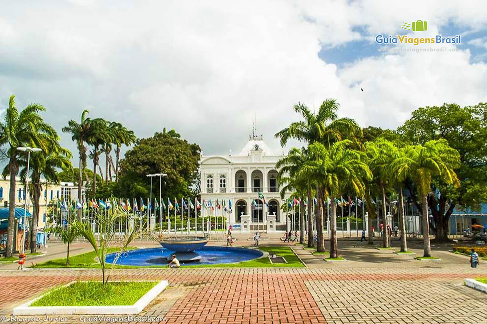

CENTRO HISTÓRICO DE MACEIÓ
O Centro Histórico de Maceió é o coração antigo da capital alagoana, onde a cidade começou a tomar forma entre os séculos XVIII e XIX.
Foi nessa região que se concentraram os primeiros edifícios públicos, igrejas, praças e casarões de famílias influentes da época, muitos deles ligados à economia do açúcar e à vida política de Alagoas.
Com ruas estreitas, praças tradicionais e construções de valor arquitetônico, o centro guarda verdadeiros tesouros históricos.
Destacam-se o Teatro Deodoro, com seu estilo neoclássico imponente, o Museu Theo Brandão, dedicado à cultura popular, e a Igreja de São Gonçalo do Amarante, uma das mais antigas da cidade.
O Palácio Marechal Floriano Peixoto, antiga sede do governo estadual, também é um marco importante.
Além do valor arquitetônico, o centro é palco da memória cultural e social de Maceió. Foi cenário de importantes movimentos históricos, festas populares, procissões e eventos que marcaram a vida da cidade.
Hoje, embora enfrente desafios de conservação, o Centro Histórico passa por projetos de revitalização que buscam preservar seu patrimônio e atrair moradores, turistas e iniciativas culturais.
Imagens do local
